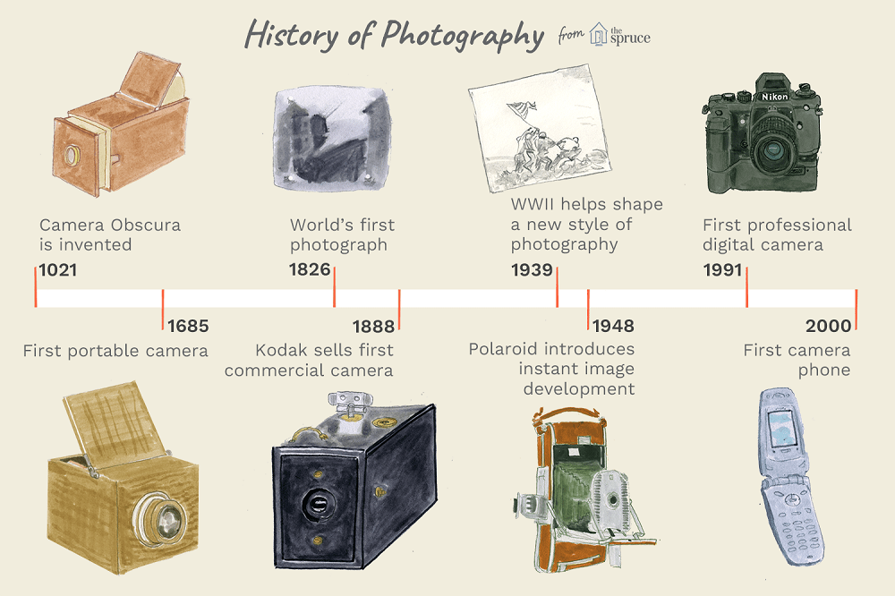

History

History through images
There’s a story behind every image. By looking at a picture, you can conclude many things about it:
Photographs have the potential to transform the way we learn about and experience the past. Images let individuals relate to one another and also shed light on the past.
Images are preserved from one generation to the next, providing insight into not just the past but also the present in terms of clothing, architecture, transportation, and fauna.
One reason why photographs are so useful in the study of history is that many people find it easier to learn about historical topics through visual means.
You don't even have to go far from home to get some truly breathtaking shots. In the convenience of your own residence, you can record priceless family occasions. Taking up photography as a pastime is great because it forces you to document your experiences. This allows you to create cherished memories with your loved ones by telling them stories about your life.